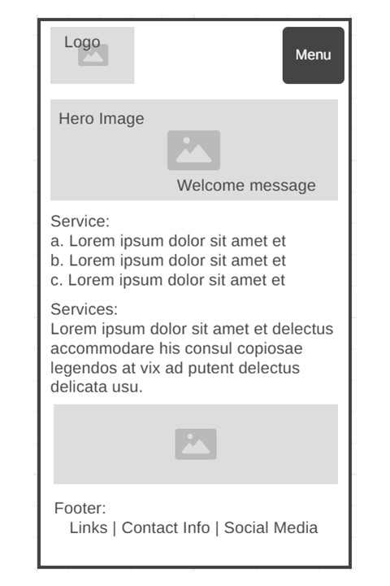
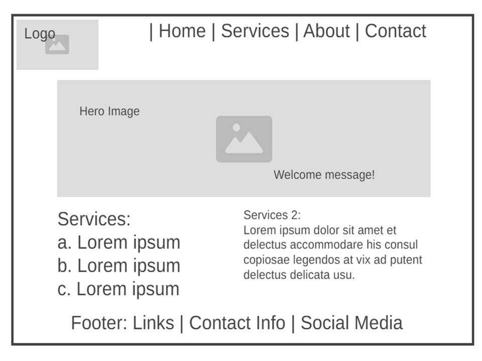

Site Name: Software Plus
As a student of the Software Development program, I am inspired to spend time testing and improving processes and applications to achieve better performance and productivity.
Site Purpose
I love to create a website that help to guide users on how to evaluate if their business applications and if their processes are well-structured, are efficient, and properly aligned with their business goals.
As a student, I realized that many students do not undestand exactly where this education path of Software Development is taking them. This webside has the purpose of helping them see a little beyond the big world the word Software means.
Scenarios
- How can I assess if my current business application is meeting the company’s performance standards?
- What steps should I take to improve the productivity of our existing software processes?
Color Schema
- Primary Color --primary-color: #1ca5ff;
- Background Color --background-color: #d7efff;
- Title Color --title-color: #000000;
- Second Background --background-color2: #FFFFFF;
Here are the colors chosen to bring light and balance to this web site. Each color has been chosen thinking about the way they will enhance and contribute to make this place comfortable to the visitors. Since this is a kinf of education material using a soft tones palette will help the visitors to feel comfortable while seeing the content of the site.
You are welcome to check the source here:
https://coolors.co/000000-1ca5ff-d7efff-ffffff
Typography
- Titles → font-family: 'Boogaloo', sans-serif;
- Other Text → font-family: 'Edu QLD Beginner', sans-serif;
Wireframe
Mobile Viewport: https://wireframe.cc/oS8op0
Larger Viewports: https://wireframe.cc/22dGPy
